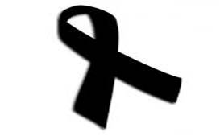
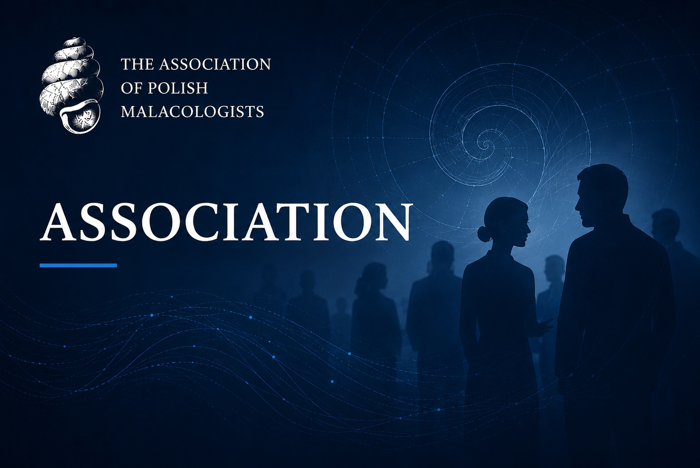
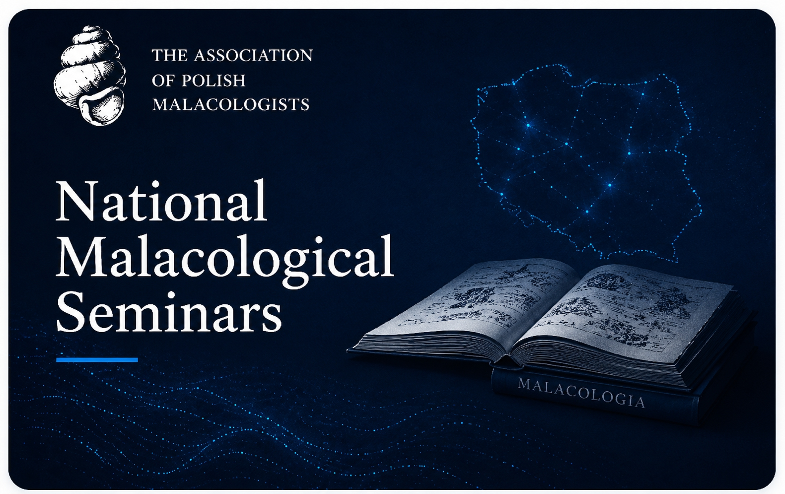
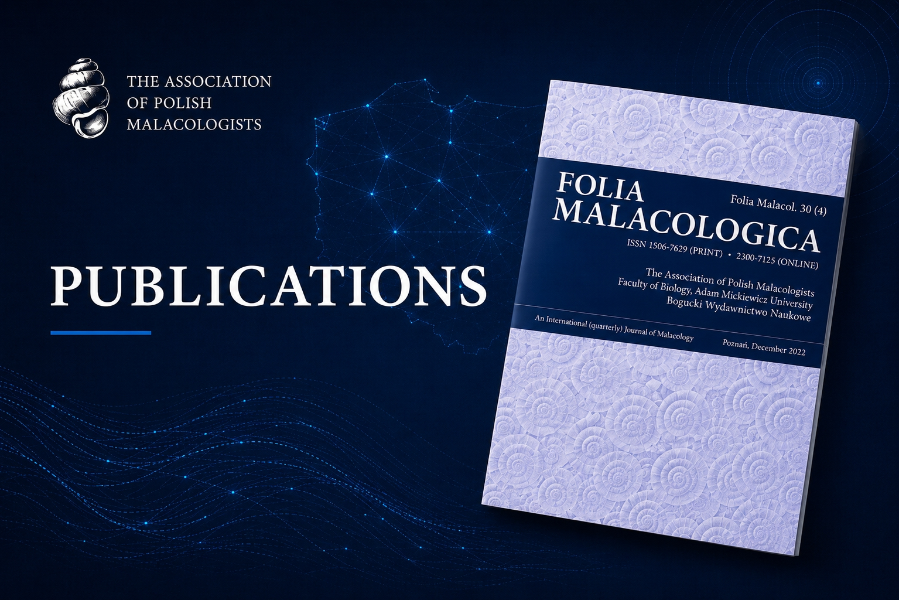
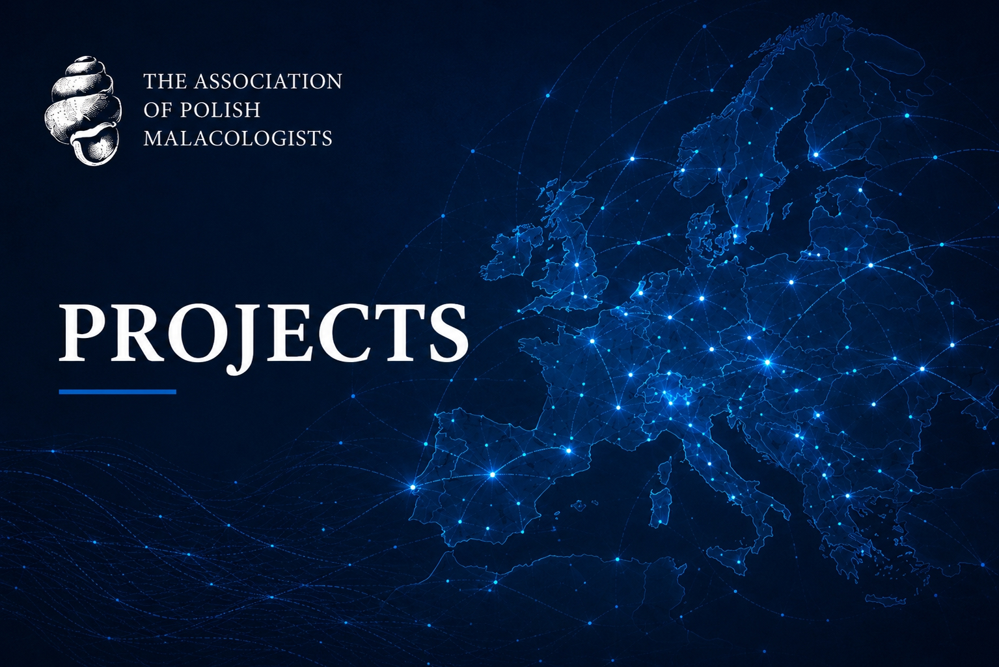
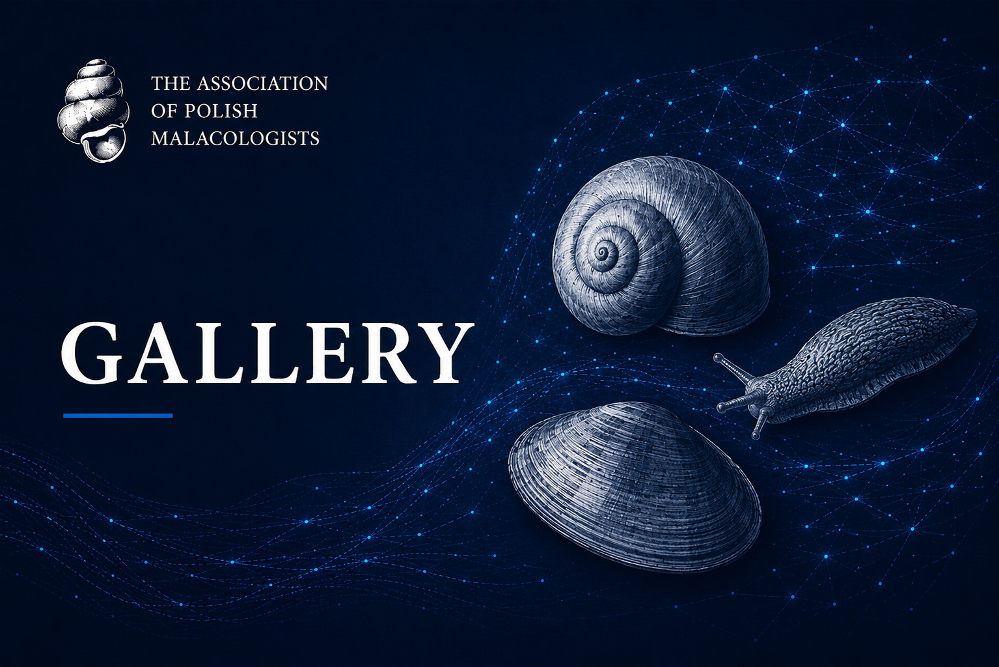
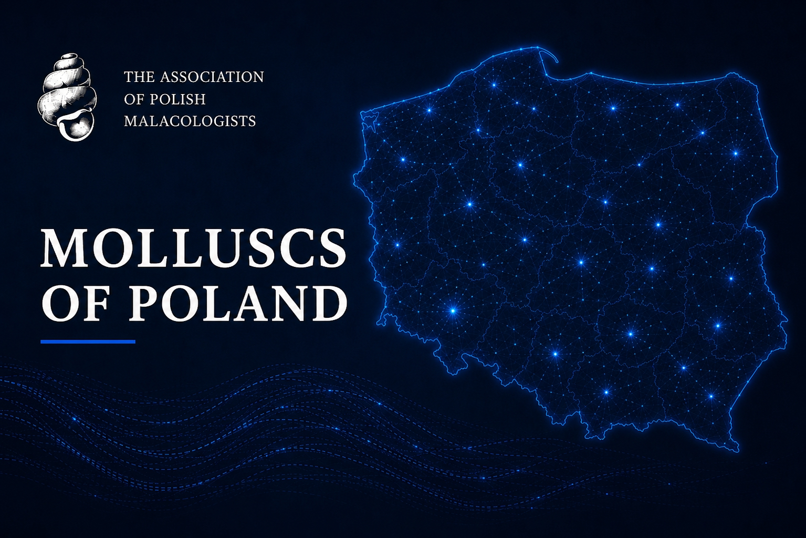

The Society of Polish Malacologists
The Society of Polish Malacologists is a nationwide scientific and professional association bringing together researchers and enthusiasts of molluscs from Poland and abroad... We contribute to the development of malacology through scientific research, the popularisation of knowledge about molluscs, and by fostering collaboration between scientific, educational, and environmental communities.
Our mission is not only to support the advancement of science, but also to promote environmental protection and to increase awareness of the role and importance of molluscs in ecosystems. We organise scientific conferences, publish research, including the journal Folia Malacologica, and support the development of future generations of researchers.
We bring together people, knowledge, and passion, creating an active and international community of malacologists.
News
Mr Stanisław Myzyk Has Passed Away
It is with deep sadness that we announce the passing of Mr Stanisław Myzyk, leaving all of us with a profound sense of loss. He was a researcher of the Polish malacofauna and a passionate populariser of knowledge about molluscs.
Board of the Society of Polish Malacologists

New Honorary Member of the Society of Polish Malacologists
During the 40th National Malacological Seminar in Kraków, we celebrated the awarding of the title of Honorary Member of the Society of Polish Malacologists to Professor Ewa Stworzewicz, PhD, DSc, ISEZ PAS.
Professor Stworzewicz’s research interests include subfossil snails found in karst formations, calcareous tufa deposits, and lacustrine chalk. For many years, she was also a member of the editorial board of Folia Malacologica, contributing to the development of the journal and strengthening its position within the scientific community.
The ceremony took place among the palaeontological collections at the Nature Education Centre of the Jagiellonian University. The laudation in honour of the recipient was prepared and delivered by Professor Witold Paweł Alexandrowicz.

Folia Malacologica Included in the Web of Science Database
We are delighted to announce that Folia Malacologica, the journal published by the Society of Polish Malacologists, has been included in the Web of Science Core Collection (Emerging Sources Citation Index).
This will significantly increase the international visibility of published articles and positively influence their citation rate. We warmly encourage researchers to publish their work in Folia Malacologica.
New Honorary Member of the Society of Polish Malacologists
We are pleased to announce that during the 39th National Malacological Seminar, held in Krobia on 7–10 May 2025, Professor Robert A. D. Cameron was ceremonially awarded the title of Honorary Member of the Society of Polish Malacologists in recognition of his outstanding achievements in world malacology, his contribution to the popularisation of the field, and his activities in support of the Society.
The laudation in honour of the recipient was prepared and delivered by Professor Małgorzata Ożgo, PhD, DSc, UKW. Professor Robert Cameron received a commemorative plaque together with a diploma, as well as wishes and warm words of gratitude for his invaluable commitment, especially for his irreplaceable work for the journal Folia Malacologica.

New Honorary Member of the Society of Polish Malacologists
We are delighted to announce that during the 38th National Malacological Seminar, held in Siedlce on 22–25 May 2024, Professor Andrzej Lesicki (AMU) was ceremonially awarded the title of Honorary Member of the Society of Polish Malacologists in recognition of his achievements in the field of malacology, his contribution to the popularisation of the discipline, and his many years of service to the Society.
The laudation in honour of the recipient, prepared by Professor Ewa Stworzewicz, was delivered by the President of the Society, Professor Marcin Szymanek. Professor Andrzej Lesicki received a commemorative plaque together with a diploma, as well as wishes and warm words of gratitude for his invaluable commitment and many years of work on the Board of the Society of Polish Malacologists, especially for editing the journal Folia Malacologica.






